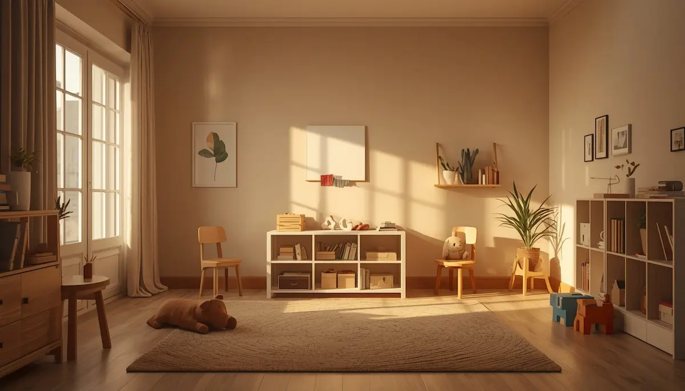

Anticiparse a los riesgos en el hogar y el colegio
La mayor parte de los accidentes infantiles ocurren en entornos cotidianos y familiares como el hogar o el centro escolar, impulsados por la natural curiosidad de los menores y su afán por explorar el mundo. Anticiparse a estos peligros mediante una adecuada evaluación ambiental es la herramienta preventiva más eficaz para evitar sustos innecesarios sin coartar la libertad de movimiento que necesitan para su desarrollo.
Identificar puntos críticos y aplicar medidas correctoras sencillas
Revisar las zonas comunes desde la perspectiva visual de un niño permite detectar riesgos latentes: proteger enchufes, asegurar estanterías pesadas a la pared, bloquear el acceso a productos de limpieza o medicamentos, y colocar barreras en escaleras son acciones básicas que transforman cualquier espacio en un entorno verdaderamente protector.
"Anticiparse a los riesgos cotidianos mediante un entorno seguro protege al menor y le permite explorar con libertad y confianza."
Fomentar la seguridad ambiental con rigor
Mantener una actitud preventiva constante en la casa y en el colegio garantiza una protección sólida frente a los imprevistos propios del crecimiento infantil.
➔ Volver al índice de Prevención y primeros auxilios